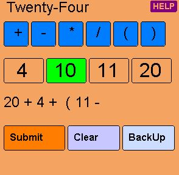

|
- The object is to make an equation that equals 24.
- Each puzzle consists of 4 numbers, all of which must be used.
- When you have found all the pieces in the maze, the puzzle will light up for you to solve it.
|
|
- When you click on a number, its color will change, and it cannot be used again.
|
|
- Use the operation buttons and parentheses as needed to make your equation.
|
|
- In equations, multiplication and division are performed first, then addition and subtraction.
- So you might need parentheses if you need addition or subtraction to be done first to make it equal 24.
|
 |
- When you're ready, click the Submit button to evaluate your equation.
- If your equation does not equal 24, or is mathematically invalid, you will get a message.
|
|  |
- Use the BackUp button or the Clear button to change your equation.
- As you remove numbers from the equation, their buttons will light up so they can be used again.
|
 |
- When you have corrected your entry, click Submit again.
|
|
- When the puzzle is solved, it will go dark until the Pentathlon level has been completed.
- If you're really stuck, here's a good solver online.
- Triple-click on the link below, Ctrl+C to copy, and then paste into a browser.
- http://scripts.cac.psu.edu/staff/r/j/rjg5/scripts/Math24.pl
|